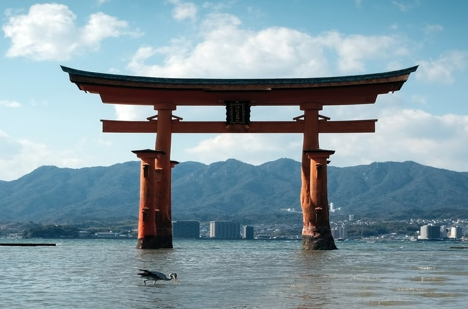

Hiroshima (広島) est un lieu beaucoup lié à la 2nde guerre mondiale.
En effet, le 6 Août 1945, la 1ère bombe atomique avait été larguée sur la ville d'Hiroshima rasant entièrement la ville et faisant des dizaines de milliers de victimes.
La ville est de nouveau reconstruite mais des endroits peuvent nous remémorer les cicatrices de ce tragique évènement.
Hiroshima, faiseur de paix.
Le site qui a été préservé après l'évènement est le genbaku dome (原爆ドーム), le dôme de la bombe atomique. C'était l'ancien palais d'exposition qui est maintenant devenu le mémorial pour la paix.
Aux abords du dôme se trouve justement le musée du mémorial de la paix de Hiroshima. On peut y apprendre plus en détails les dommages que cela à engendrer avec de nombreux témoignages et d'objets ayant subit l'explosion de la bombe.
Le musée se trouve dans le parc du mémorial de la paix de Hiroshima qui se trouve justement à l'endroit où la bombe serait tombé. Un cénotaphe y est d'ailleurs construit afin de prier à la mémoire de toutes les victimes de ce tragique évènement. Chaque 6 Août, une commémoration a lieu pour ne pas oublier cette tragédie.
 le grand torii de MiyajimaDans la préfecture de Hiroshima se trouve l'île Miyajima qui abrite le sanctuaire de Itsukushima (厳島神社).
L'endroit est connu pour son grand torii (大鳥居), le portail rouge géant aux abords de l'île dont les pieds sont recouverts par la mer lors de marée haute. Autre aspect atypique, l'île est peuplé de cerfs en liberté. Il est donc loin d'être impossible de croiser un cerf au milieu de la zone touristique de l'île. On peut visiter le sanctuaire de Itsukushima qui se trouve aux bords de l'île subissant aussi par moment les phénomènes de marée. Pour avoir une vue d'ensemble de l'île on peut escalader le Mont Misen (弥山).